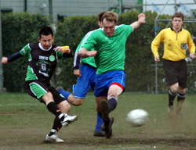
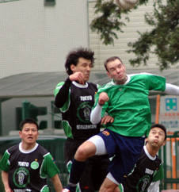
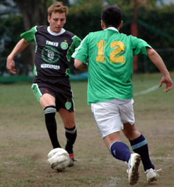

|
YC&AC, Sun 2nd April. We had done the sums and worked out that if the Hibs won this game and the YCAC drew or lost against the Swiss or France FC; the 3rd TML championship would be heading from Swiss’ HQ at Bernd’s bar, back with the Hibs to Paddy Foley’s.
For this fixture against the Shogun Knights at the YCAC the wind was blowing strongly (as usual) and the pitch seems to getting bumpier each week. At Tokyo Hibernian we wholeheartedly endorse the Swiss’ plea for the new Astro pitch at the YCAC to be built to full size; (I reckon most of us clumsy bruisers in the TML will have no problem running 10 yards in stead of 5 to challenge an opposition player blessed with more than his fair share of skill – the extra exercise will do us the world of good!).
Along with the larger pitch a large wind break of some kind (please note and request any YCAC members reading!) would make it even more of a pleasure to play there in the future.
As for the game; the conditions made this one of those days that was always going to be tough to grind out a result. It was a mark of the evenness of the TML that a top v bottom match could be so evenly played out. The Shogun Knights surprisingly went ahead 1-0 after 10 minutes as Bevan lost possession in midfield leading to a SK corner and a Schwarzenegger-like SK / Clash attacker stole a half yard on Bevan and a well delivered flat corner was met well by Arny near post who flicked it back post for the goal. A flat and hard near post delivery and well timed run combination from a corner is always hard to deal with and credit to this thrown together SK outfit as they did it as though they had practiced it dozens of times. Things went from bad to worse for Bevan as he hit the post and missed a penalty 5 minutes later, to keep the scores at 0-1.
Kuni K and Keita were looking lively up front and some clever interplay between these two saw Kuni K round the keeper with an open net to aim for from a tight angle, but he pulled his finish wide and Tomo did well to stay alive and tap it in from close range; the goal was ruled out for offside, denying Tomo the goal he deserves. We finally got the equalizer as this time it was Keita that scuffed his shot but Kuni K stayed alive and finished well with a flick in from a tight angle.
1-1 into half time and considering we had the wind it was not a great result. To make things worse Kuni H went off with a knee injury and we were down to a bare 11. In the second half the going got even tougher as the winds increased to almost gale force and the dirt was blowing up into the eyes (for those that played if you haven’t already - I would highly recommend a thorough ear and nose clean out!). Despite working against the wind we dominated the first 20 minutes and we finally got the goal midway through the half after Kuni and Keita again weaved some magic to see Keita through on goal and he skipped it by the keeper.
There were a few nervous moments for the Hibs in the last 20 minutes as the SK pushed players forwards. Terry and Jay performed very admirably at the back in difficult conditions. Hitoshi came to the rescue again as a shot from outside the area was rolling at speed straight at him. Hitoshi was crouched with open arms and had it covered, but it skipped up off the infamous pitch at the last moment and with both arms committed - his only option was to head it over the bar, which he did with aplomb. In the end it was one of those games that was never going to be pretty, but we were very happy to put the 3 points in the bag and move along. We now have 2 games left against Sala and the YCAC. Both teams will have points to prove and they will be spirited fixtures regardless of the relevance of the games to the league title.
Match photographer: Sid.
Reporter: Bevan Colless.
|